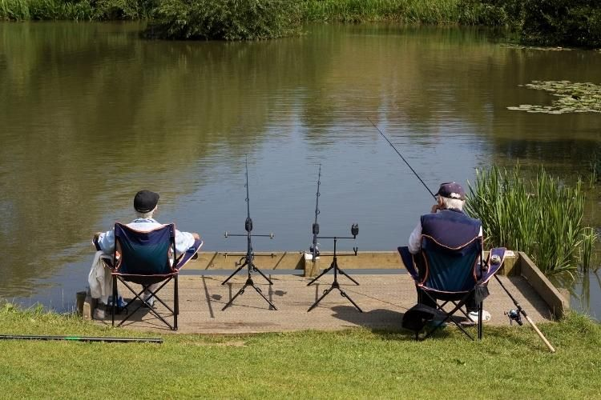
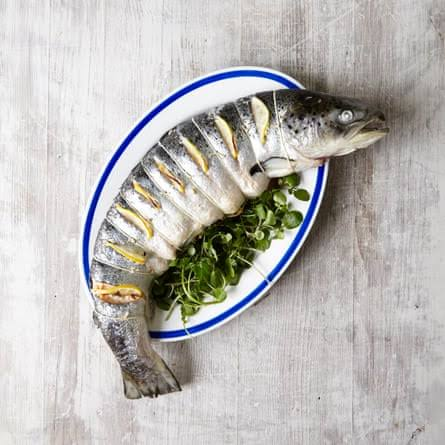

UM LUGAR PARA QUEM AMA PESCA
Esse é o nosso lugar especial para os amantes de pesca!
Venha nos visitar!
Estamos localizados em São Paulo, capital da pesca esportiva no Brasil.

Diminua a janela do navegador para ver o efeito de responsividade.
Este site se adapta a diferentes tamanhos de tela.
Com layout responsivo.
Esse é o nosso lugar especial para os amantes de pesca!
Estamos localizados em São Paulo, capital da pesca esportiva no Brasil.

Nossa gastronomia é uma experiência única, combinando ingredientes frescos e sabores autênticos.
